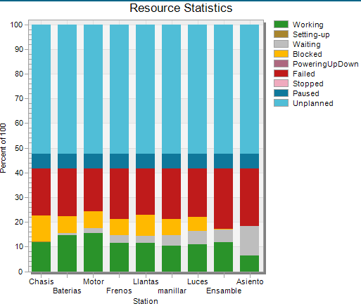

Considerando la demanda creciente en 2025 de motos eléctricas, la empresa ensambladora cuenta con 9 estaciones para cumplir con el proceso. Sin embargo, todas las estaciones se encuentran operadas de forma manual, limitando la producción y los tiempos de entrega.
En cuanto la demanda aumenta se observan problemas de mercado con los tiempos de entrega, por lo que es importante mejorar estos tiempos de producción y alistamiento para sacar el mayor provecho a una demanda emergente. Así, inicia el proceso para optimizar el ensamblaje de motos eléctricas de alto voltaje.
Así, se puede observar el layout de la planta inicial correspondiente.
| Estación | Función |
|---|---|
| Chasis | Base estructural de la moto. |
| Motor | Instala el sistema de propulsión. |
| Baterías | Coloca el sistema de energía. |
| Frenos | Ensamble del sistema de frenado. |
| Llantas | Montaje de ruedas al chasis. |
| Manillar | Instala dirección y controles. |
| Luces | Fija luces delanteras y traseras. |
| Asiento | Coloca el asiento al chasis. |
| Ensamble | Integración y revisión final. |
| Estación | Tiempo de proceso | Tiempo de set-up | Falla | Distribución | Tiempo de reparación |
|---|---|---|---|---|---|
| chasis | 65:00 | 5:00 | alineacion_deficiente | Negexp(1200) | 10:00 |
| herramienta_danada | Negexp(1500) | 9:00 | |||
| pieza_mal_colocada | Negexp(1800) | 8:00 | |||
| error_de_medicion | Negexp(2100) | 10:00 | |||
| baterias | 85:00 | 4:00 | fuga_electrolito | Negexp(2400) | 12:00 |
| error_polaridad | Negexp(3000) | 10:00 | |||
| celdas_danadas | LogNorm(1800,600) | 12:00 | |||
| conexion_deficiente | Negexp(2700) | 9:00 | |||
| motor | 95:00 | 6:00 | desalineacion_eje | Negexp(1800) | 10:00 |
| fallo_ensamble | LogNorm(1500,450) | 9:00 | |||
| calibracion_incorrecta | Negexp(2400) | 10:00 | |||
| daño_en_carcasa | Negexp(3000) | 12:00 | |||
| llantas | 75:00 | 4:00 | llanta_deformada | Negexp(1800) | 10:00 |
| error_balanceo | Negexp(2100) | 9:00 | |||
| fijacion_incorrecta | LogNorm(1600,400) | 10:00 | |||
| frenos | 80:00 | 5:00 | fuga_hidraulica | Negexp(2400) | 12:00 |
| error_purga | Negexp(1800) | 9:00 | |||
| sensor_frenos | LogNorm(1500,400) | 10:00 | |||
| manillar | 78:00 | 3:00 | torque_inadecuado | Negexp(1500) | 8:00 |
| manillar_desviado | Negexp(1800) | 10:00 | |||
| pieza_incompleta | LogNorm(1200,350) | 10:00 | |||
| luces | 90:00 | 4:00 | corto_luces | Negexp(2400) | 12:00 |
| conexion_defectuosa | Negexp(2100) | 10:00 | |||
| direccion_mal_marcada | LogNorm(1800,500) | 9:00 | |||
| ensamble | 105:00 | 6:00 | pieza_olvidada | Negexp(3000) | 12:00 |
| fallo_estructura | LogNorm(2000,600) | 10:00 | |||
| ajuste_incompleto | Negexp(2400) | 9:00 | |||
| asiento | 60:00 | 4:00 | fijación_incompleta | Negexp(1800) | 10:00 |
| tapizado_defectuoso | Negexp(2100) | 9:00 | |||
| estructura_dañada | LogNorm(1600,400) | 12:00 |
Se ha modelado la línea de ensamblaje considerando flujos paralelos (para baterías, motores y chasis), fallas con distribución uniforme, buffers limitados y sin intervención humana directa. La simulación permite analizar KPIs como tiempos de ciclo, tasas de producción, utilización de estaciones y fallos.

Con su respectiva gráfica para entender como están funcionando las estaciones.
Se implementa un diagrama Value Stream Mapping para analizar el proceso o flujo de la planta, que junto a la simulación revelan el estado de la línea de producción y permiten priorizar estaciones que no esten siendo efectivas.
Se suman los tiempos de operación de todas las estaciones de ensamblaje obtenidos por el software Tecnomatix en la simulación:
Resultado: 98 horas y 56 minutos por motocicleta.
Considerando un turno de 8 horas (28.800 segundos) y la estación más lenta (chasis), con tiempo de ciclo de 46.776,96 segundos:
Suponiendo 22 días laborales al mes:
A partir del siguiente código en SimTalk se obtuvo el O.E.E. de la situación simulada:
| Parámetro | Resutado |
|---|---|
| Tiempo de simulación | 7 días |
| Unidades ideales | 14 |
| Piezas logradas | 10 |
| Fallas | 6 |
| Disponibilidad | 73.363% |
| Rendimiento | 72.71% |
| Calidad | 40% |
| O.E.E. global | 21.339% |
| Indicador | Valor |
|---|---|
| Tiempo total de ensamblaje | 5 horas y 36 minutos por motocicleta |
| Capacidad instalada | 1.43 moto/día |
| Producción mensual | 40 unidades |
Si bien en el momento cumple con la demanda esperada y las estaciones se encuentran usualmente en uso, la planta y sus procesos presentan retrasos significativos, limitaciones debido a los procesos manuales, un nivel tecnológico bajo y dificultades en el monitoreo y trazabilidad de los productos y procesos.
Adicionalmente, el VSM refleja posibles dificultades en la utilización de la planta y un valor agregado bajo, por lo que es notoria una oportunidad de mejora en los procesos realizados por la planta. El cálculo del OEE permite priorizar las estaciones de ensamble, motor y luces debido a sus altos tiempos de ciclo o baja disponiblidad respectivamente.
No obstante, se debe reconocer la alta flexibilidad con la que cuenta la operación, lo que permite una ventaja en cuanto a la personalización de partes y cambios en los modelos.
Por lo tanto es evidente el espacio para una mejora en los procesos, que le permita a la empresa adaptarse a tiempos con picos de demanda o a una sostenibilidad a largo plazo con un mercado creciente, procurando conservar el valor de la flexibilidad y personalización, altamente valorado en las tendencias de mercado vehicular actuales.